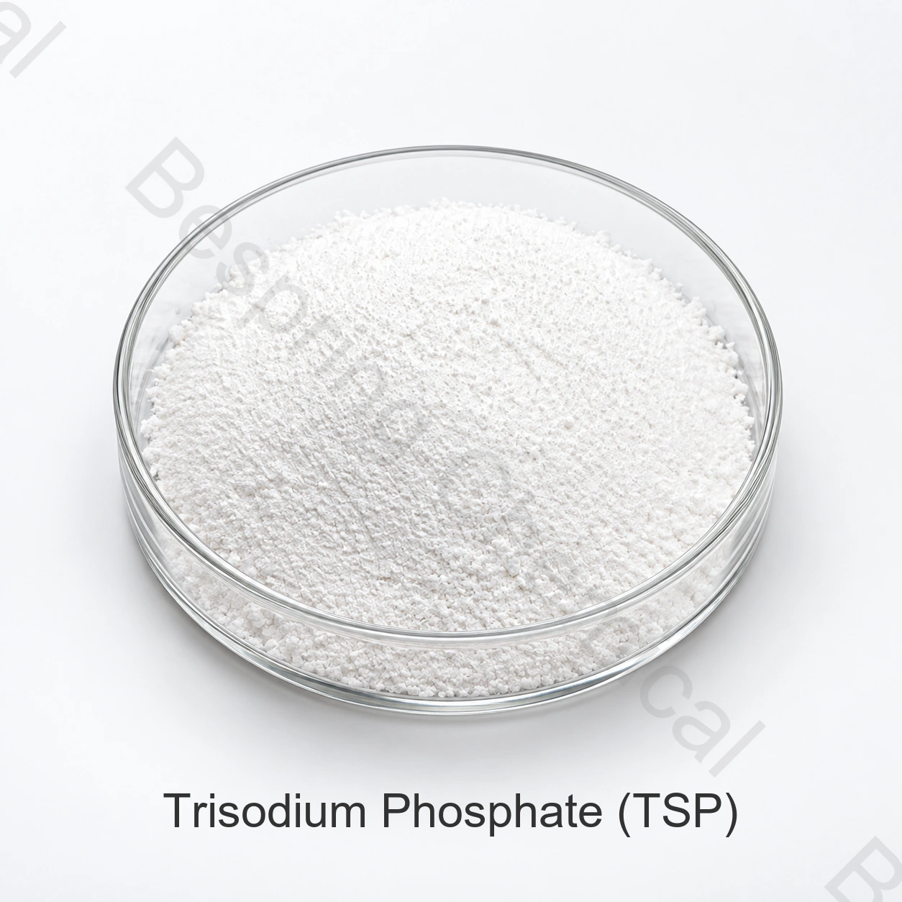

碱性缓冲剂
TSP是碱性的,可能会影响配方的pH值。必须评估剂量、味道、蛋白质反应和目的地市场的许可。
食品级磷酸盐 · 钠正磷酸盐 · INS 339(iii)
磷酸三钠是一种碱性钠正磷酸盐,以无水或水合形式供应,用于缓冲、乳化盐、螯合和水管理应用。

产品概述
食品级磷酸三钠(TSP ) , 也称为三碱性磷酸钠,是INS 339(iii ) 。所提供的表格涵盖无水Na3PO4 以及十二水合 Na3PO4·12H2O 形态。
此页面将所提供的商业规格与独立的身份参考资料分开。必须确认目标市场的合法用途、剂量和文件以及准确的食品应用。
功能作用
性能取决于等级、剂量、配方、工艺条件和适用的食品规定。
TSP是碱性的,可能会影响配方的pH值。必须评估剂量、味道、蛋白质反应和目的地市场的许可。
所提供的资料确定了保水性；公认的磷酸盐功能还包括螯合和乳化盐用途。
食品应用筛选
这些是应用筛选领域,而不是普遍使用批准或保证结果。
评估实际蛋白质和盐系统中的保水性、结合力、产量、质地和感官效应。
可能有助于合格乳化盐系统中的pH值和矿物质平衡。
筛选蛋白质相互作用、缓冲和稳定性,同时控制碱度和味道。
在商业使用前评估pH值、清晰度、矿物相容性和味道。
确认水合物形态、溶解性、流动性及与酸和其他矿物的相容性。
所提供资料提及糖汁净化用途；食品接触与工艺用途需另行进行技术审查。
已提供的技术数据
以下数值转载自所提供的产品表。它们不是批量COA或通用监管标准。确认当前签署的规格和方法,然后再批准。
| 检测项目 | 单位 | 规格 |
|---|---|---|
| 外观 | — | 白色结晶或颗粒状粉末 |
| 磷酸三钠含量 | — | 取决于形式；见下列行 |
| 无水，以干燥 Na3PO4 | % | ≥97.0 |
| 十二水合物 | % | ≥92.0 |
| 砷(As) | % | ≤0.0003 |
| 氟化物(F) | % | ≤0.005 |
| 重金属(以Pb计) | % | ≤0.001 |
| 不溶于水的物质 | % | ≤0.2 |
| 干燥失重 | — | 取决于形式；见下列行 |
| 无水 | % | ≤2.0 |
| 十二水合物 | % | 45.0–57.0 |
规格说明: 无水和十二水合TSP在分子量和干燥失重方面有很大差异。在采购规格和配方计算中说明所需的形式和分析基础。
采购评估支持
请求当前规格/TDS、SDS、测试方法和代表或批次COA。
请求适用的 HACCP、Kosher、Halal 和 ISO 文档;验证产品、现场、范围和有效性。
参阅 FAO/WHO JECFA 磷酸三钠记录 用于身份背景。
储存与操作
采购常见问题
磷酸三钠是一种碱性钠正磷酸盐,以无水或水合形式供应,用于缓冲、乳化盐、螯合和水管理应用。确认合法用途和准确应用的性能。
所提供的表格显示≥97.0%无水。使用当前签署的规格和批次COA进行验收。
参考数量为每袋25公斤，每20英尺集装箱24吨，最低订单量为500公斤。
请求规格/TDS、SDS、COA 和适用的HACCP、Kosher、Halal和ISO文档以获取确切来源。
提供级别或水合物形态、用途、规格、数量、包装、目的地、单据和交货日期。
编辑审核: 百泉化工技术出口团队 · 最后审核时间:2026-07-20
相关食品磷酸盐
查看相关食品级磷酸盐的识别信息、规格、应用和采购详情。
查看相关食品级磷酸盐的识别信息、规格、应用和采购详情。
查看相关食品级磷酸盐的识别信息、规格、应用和采购详情。